20 Địa Điểm Du Lịch Ninh Bình
Nổi Tiếng Đẹp Như Tiên Cảnh
NinhBinh Vietnam
Last updated 4/Th03/2026
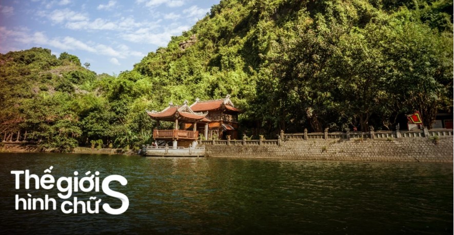
Các địa điểm du lịch Ninh Bình nào đã làm nên sức hút cho vùng đất được ví như “tiên cảnh” này? Xem NinhBinh Việt Nam sẽ gợi ý đến bạn các danh lam thắng cảnh nào nha!
Cách thủ đô Hà Nội khoảng tầm 100km về phía Nam, Ninh Bình là một tỉnh nằm ở cực Nam đồng bằng Bắc bộ. Ninh Bình còn được mệnh danh là "Vịnh Hạ Long trên cạn" với cánh đồng lúa trải dài và hệ thống hang động kỳ ảo. Ngoài ra, các địa điểm du lịch Ninh Bình còn là nơi lưu giữ nhiều giá trị lịch sử. Du khách đến thăm cố đô Hoa Lư, chùa Bái Đính, đền Vua Đinh, đền Vua Lê để tìm hiểu về lịch sử hào hùng của dân tộc.
Hãy cùng mình đi dạo qua hệ thống hang động ngầm dài nhất Đông Nam Á và nhiều điều thú vị khác ở Ninh Bình nữa nha!
1. Cố Đô Hoa Lư - Di Tích Lịch Sử Nổi Tiếng Ở Ninh Bình
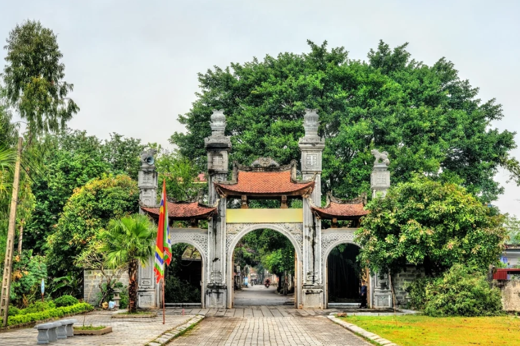
Cố đô Hoa Lư là quần thể di tích lịch sử đặc biệt quan trọng của Việt Nam. Đây cũng là một trong bốn vùng lõi của quần thể di sản thế giới Tràng An đã được UNESCO công nhận. Di tích cố đô Hoa Lư còn được biết đến là một trong những căn cứ địa quân sự quan trọng của quân và dân Đại Việt dưới các triều đại: Lý-Trần-Lê-Mạc-Tây Sơn.
Mặc dù chỉ tồn tại vẻn vẹn 42 năm, Cố đô Hoa Lư đã là nhân chứng sống cho các cột mốc lịch sử quan trọng của dân tộc. Nơi đây gắn liền với sự nghiệp dựng nước và giữ nước của ba triều đại Đinh, Tiền Lê và Lý, ghi dấu nhiều chiến công như: thống nhất giang sơn, đánh Tống – dẹp Chiêm, và đặt nền móng cho sự phát triển của Thăng Long – Hà Nội.
2. Đầm Vân Long, Địa Điểm Du Lịch Ninh Bình Cho Người Yêu Thiên Nhiên
Đầm Vân Long, thiên đường sinh thái thuần khiết, thu hút những người yêu vẻ đẹp hoang sơ đến Ninh Bình. Được bao bọc bởi các đảo đá cô lập và thung lũng nước rộng lớn, nơi đây trở thành nơi ẩn náu của nhiều loài động vật, đặc biệt là các loài chim di trú. Khám phá đầm trên thuyền tre, bạn sẽ thấy thư thái khi hòa mình vào thiên nhiên, tận hưởng không khí trong lành.
Các "thánh" đam mê "sống ảo" và muốn tận mắt chiêm ngưỡng hoa sen nở rộ thì nhất định phải đến Vân Long vào mùa hhè, khoảng tháng 5, tháng 6 nha. Lúc này không gian xanh khu sinh thái đã được bao phủ trong sắc hồng dịu dàng và hương thơm ngát của hoa sen - còn gì hợp lý hơn là "săn" một album ảnh "để đời" phải không nào!
3. Hồ Đồng Chương - Điểm Cắm Trại Giữa Thiên Nhiên
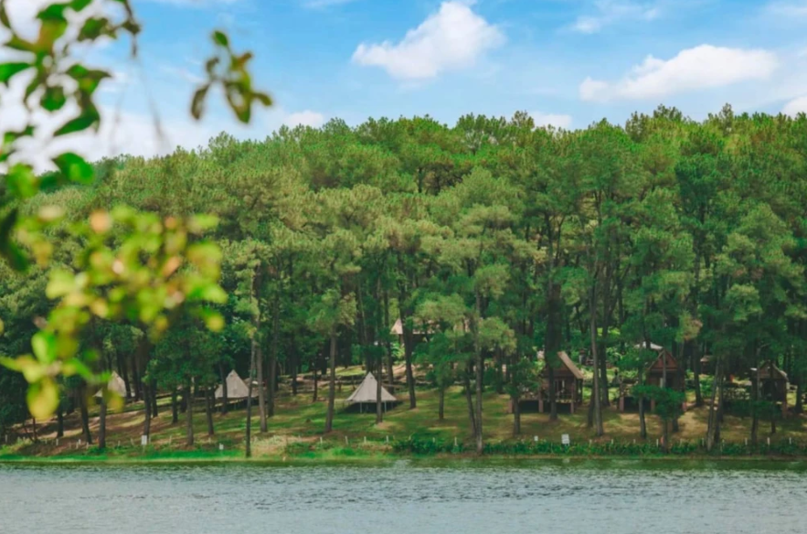
Đến với Nho Quan - Ninh Bình,các bạn đừng bỏ lỡ cơ hội nên một lần ghé thăm Hồ Đồng Chương, nơi có rừng thông bạt ngàn soi bóng xuống mặt hồ phẳng lặng. Với các hoạt động như cắm trại, câu cá, đạp xe, chèo thuyền kayak... Hồ Đồng Chương là điểm đến lý tưởng cho những ai đang muốn trốn khỏi sự ồn ào của thành phố. Đặc biệt, vào mùa hè, hồ Đồng Chương càng trở nên quyến rũ với nắng vàng và gió mát, rất thích hợp để nghỉ dưỡng.
4. Nhà Thờ Đá Phát Diệm - Kiến Trúc Tâm Linh Đặc Sắc
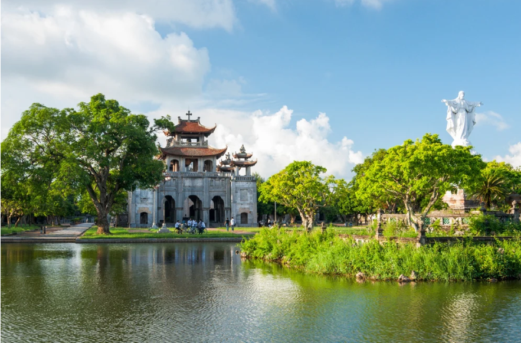
Cách trung tâm Ninh Bình khoảng 28km, nhà thờ đá Phát Diệm là một trong những công trình tôn giáo độc đáo bậc nhất Việt Nam. Với lịch sử hơn 120 năm và quá trình xây dựng kéo dài gần 30 năm, nơi đây gây ấn tượng bởi kiến trúc pha trộn giữa nhà thờ Công giáo và đình chùa truyền thống Việt Nam.
Toàn bộ công trình được dựng bằng đá xanh và gỗ lim, tạo nên vẻ uy nghiêm nhưng vẫn gần gũi. Nếu bạn yêu thích không gian kiến trúc cổ và muốn tìm hiểu thêm về xứ đạo Phát Diệm nổi tiếng, đừng bỏ qua điểm đến đặc biệt này trong hành trình khám phá Ninh Bình của mình nhé!
5. Vườn Quốc Gia Cúc Phương Ở Ninh Bình
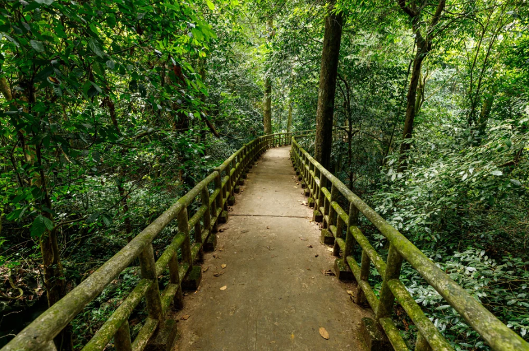
Là vườn quốc gia đầu tiên của Việt Nam, Cúc Phương trải rộng trên địa phận ba tỉnh Ninh Bình, Hòa Bình và Thanh Hóa với hệ sinh thái đa dạng và phong phú. Nơi đây được được UNESCO công nhận là Khu dự trữ sinh quyển thế giới, khẳng định giá trị to lớn của khu rừng này đối với toàn cầu.
Những ngày cuối tháng 5 là thời điểm lý tưởng để khám phá vẻ đẹp kỳ ảo của rừng Cúc Phương. Hàng vạn con bướm đủ sắc màu bay lượn tạo nên một bức tranh thiên nhiên tuyệt đẹp. Chẳng có gì tuyệt vời hơn khi có thể khoảnh khắc tuyệt vời này bằng thước phim "chất phát ngất" phải không các bạn!
6. Đồi Dứa Tam Điệp, Ninh Bình
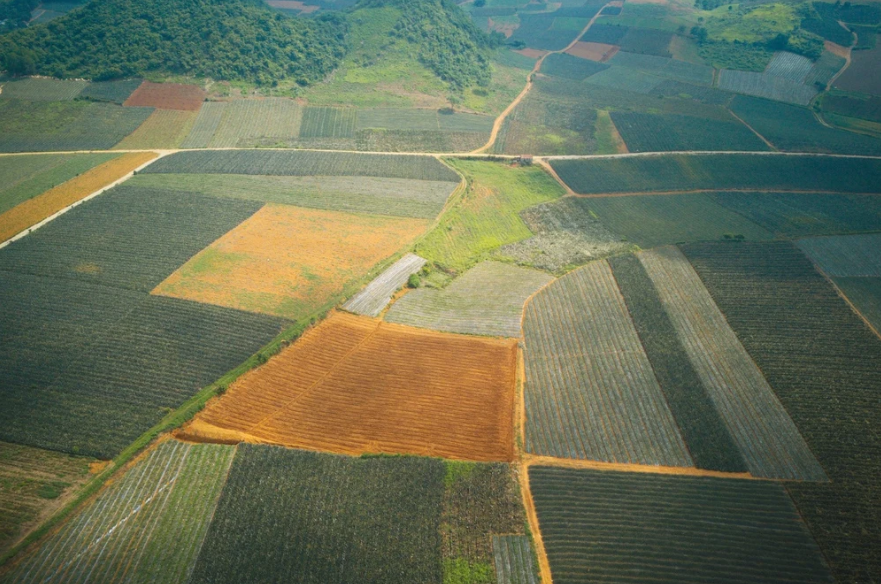
Đồi dứa Tam Điệp được ví như “Đà Lạt thu nhỏ” giữa lòng Ninh Bình, nơi không có khói bụi, không tiếng xe ồn ào mà chỉ có bầu không khí trong lành, mát mẻ và yên bình. Từ tháng 6 đến tháng 7 là thời điểm đẹp nhất để ghé thăm, khi cả cánh đồng dứa xanh mướt bắt đầu vào mùa thu hoạch, điểm xuyết những quả dứa vàng óng, tỏa hương thơm ngọt lịm khắp không gian. Đây là địa điểm lý tưởng để check-in giữa thiên nhiên rộng mở, trải nghiệm hái dứa tại vườn và thưởng thức những trái dứa tươi ngon ngay tại chỗ.
7. Thung Nắng - Danh Thắng Đẹp Như Tranh Thủy Mặc
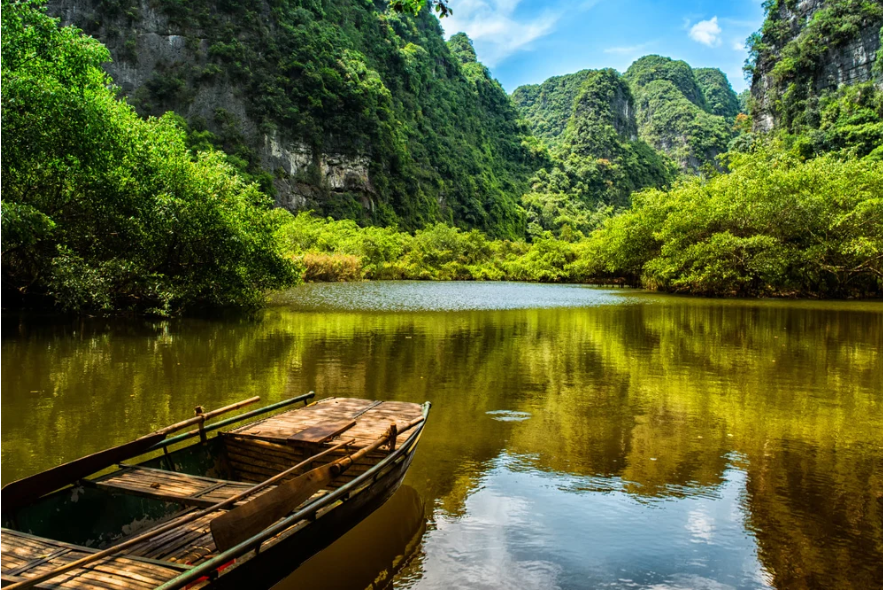
Thuộc quần thể danh thắng Tràng An, Thung Nắng là nơi mang đến cho bạn bức tranh làng quê Bắc Bộ đầy chất thơ, với dòng nước xanh biếc len lỏi giữa cánh đồng lúa chín, những mái nhà tranh đơn sơ và khung cảnh yên bình đến lạ. Thung Nắng được chia thành hai khu vực: Thung Nắng Ngoài mang vẻ đẹp mộc mạc, gần gũi; còn Thung Nắng Trong nổi bật với hệ thống hang động kỳ bí, mát lạnh quanh năm.
Dọc đường vào, hai bên là lau sậy và cỏ lác mọc tự nhiên, điểm xuyết mái nhà thấp thoáng phía xa tạo nên một khung cảnh thanh bình, lý tưởng để lênh đênh trên chiếc thuyền nan và hít thở trọn vẹn không khí trong lành của Ninh Bình.
8. Đền Thờ Vua Đinh Tiên Hoàng
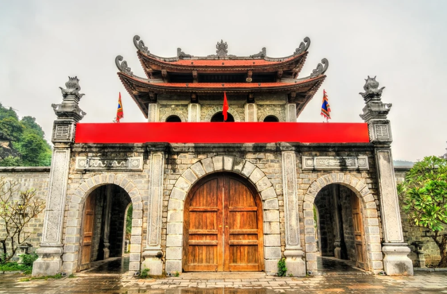
Đền Vua Đinh Tiên Hoàng là khu di tích lịch sử quan trọng thuộc địa phận bảo vệ đặc biệt của quần thể di sản thế giới Tràng An đã được UNESCO công nhận năm 2014.. Đây là nơi độc nhất ở Việt Nam thờ đồng thời Vua Đinh Tiên Hoàng, thân phụ, thân mẫu của ông cùng các con trai và có bài vị thờ các vị tướng triều Đinh.
Đền thờ Vua Đinh được gây dựng theo phong cách nội công ngoại quốc ngay phía trên nền cung điện của kinh đô Hoa Lư trước đó. Cũng tại khu vực này, đội khảo cổ đã đào được một mảng sân gạch có họa tiết hoa sen cổ cùng đôi phượng vờn nhau. Trên bề mặt của gạch có dòng chữ “Đại Việt Quốc quân thành chuyên” và “Giang tây quân” có niên đại thời Đinh – Lê.
9. Đền Thờ Vua Lê Ở Ninh Bình
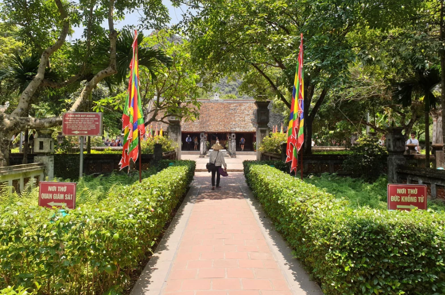
Cách khu vực Đền Vua Đinh Tiên Hoàng khoảng 300m chính là Đền Vua Lê Đại Hành. Đền được xây dựng để thờ Vua Lê Đại Hành - vị vua tài ba đã đánh bại quân Tống, lập nên nhà Tiền Lê, thống nhất đất nước. Ngoài ra, đền còn thờ các thành viên hoàng tộc khác như Thái hậu Dương Vân Nga, Vua Lê Long Đĩnh, Công chúa Lê Thị Phất Ngân và Tướng Phạm Cự Lượng.
Lễ hội Đền Vua Lê Đại Hành thường được tổ chức vào khoảng tháng 3 âm lịch hàng năm. Đây là dịp để người dân địa phương và du khách thập phương cùng nhau tưởng nhớ công ơn của vị vua anh hùng, đồng thời cầu mong một năm mới an lành, hạnh phúc.
10. Biển Kim Sơn - Cồn Nổi
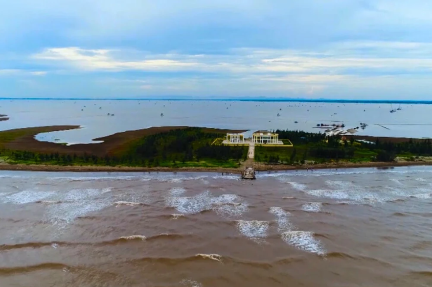
Ninh Bình có biển không? Có chứ! Ngoài các hang động nổi tiếng, Ninh Bình còn sở hữu Biển Kim Sơn với bờ cát dài 18km - thiên đường cho ai yêu thích thiên nhiên hoang sơ. Bạn có thể thỏa sức dạo bộ trên con đê, khám phá đồng cỏ, đầm tôm hay rừng phòng hộ. Người dân nơi đây thân thiện, mến khách sẽ giúp bạn cảm thấy thoải mái như đang ở nhà.
Cồn Nổi - một phần của Biển Kim Sơn, được UNESCO công nhận là Khu dự trữ sinh quyển vùng châu thổ sông Hồng. Đến đây, bạn sẽ thấy bao la là các loài chim, trong đó có cả loài sếu đầu đỏ quý hiếm. Bãi biển hoang sơ, rừng ngập mặn rộng lớn sẽ mang đến cho bạn trải nghiệm du lịch sinh thái đặc sắc.
11. Khu Thắng Cảnh Thung Nham
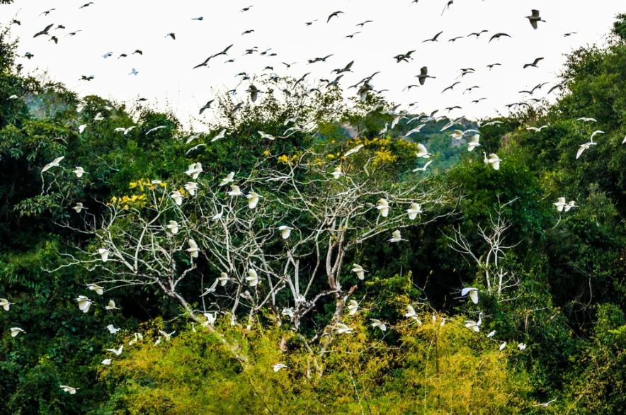
Bạn đã bao giờ thử cảm giác chèo thuyền qua hang động tối tăm, lung linh ánh đèn? Hay khám phá khu bảo tồn thiên nhiên, ngắm nhìn hàng ngàn loài chim sinh sống? Thung Nham sẽ mang đến cho bạn trải nghiệm mà không phải nơi nào cũng có.
Cách trung tâm Ninh Bình khoảng 12km, khu du lịch sinh thái Thung Nham nằm trong vùng lõi danh thắng Tràng An, gần Tam Cốc - Bích Động. Với diện tích hơn 300ha, nơi đây kết hợp đa dạng loại hình tham quan như rừng ngập nước, vườn cây ăn trái, leo núi, hang động và đặc biệt là khu vườn chim hoang dã với hàng trăm loài chim quý.
Không gian Thung Nham là sự hòa quyện giữa núi non, sông nước và thảm thực vật phong phú. Những dãy núi bao quanh, đồng hoa khoe sắc cùng hệ thống hang động kỳ ảo như động Tiên Cá, động Vái Giời, hang Bụt… tạo nên bức tranh thiên nhiên sống động, thích hợp cho cả nghỉ dưỡng lẫn khám phá.
12. Danh Thắng Tam Cốc - Bích Động
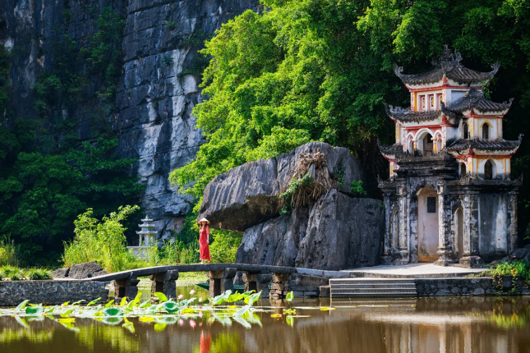
Hành trình khám phá Tam Cốc- Bích Động giống như việc lạc vào một thước phim điện ảnh, nơi bạn được ngồi thuyền xuôi dòng Ngô Đồng, len lỏi giữa những cánh đồng lúa chín vàng rực rỡ hay xanh mướt tùy mùa. Cứ thế, con thuyền nhỏ đưa ta đi xuyên qua hệ thống ba hang động kỳ ảo: hang Cả, hang Hai và hang Ba, nơi những khối nhũ đá nghìn năm tuổi rủ xuống như những kiệt tác của tạo hóa.
Nhưng không chỉ dừng lại ở cảnh sắc nên thơ, Tam Cốc còn mang trong mình chiều sâu của lịch sử với hành cung Vũ Lâm, một căn cứ địa hiểm yếu, minh chứng cho trí tuệ và lòng quả cảm của nhà Trần trong cuộc kháng chiến chống Nguyên Mông hào hùng. Đứng giữa mây trời non nước ấy, bạn sẽ cảm thấy tâm hồn mình vừa được xoa dịu bởi thiên nhiên, vừa được đánh thức bởi những giá trị văn hóa ngàn đời.
13. Chùa Bái Đính - Quần Thể Tâm Linh Kỳ Vĩ Giữa Lòng Di Sản
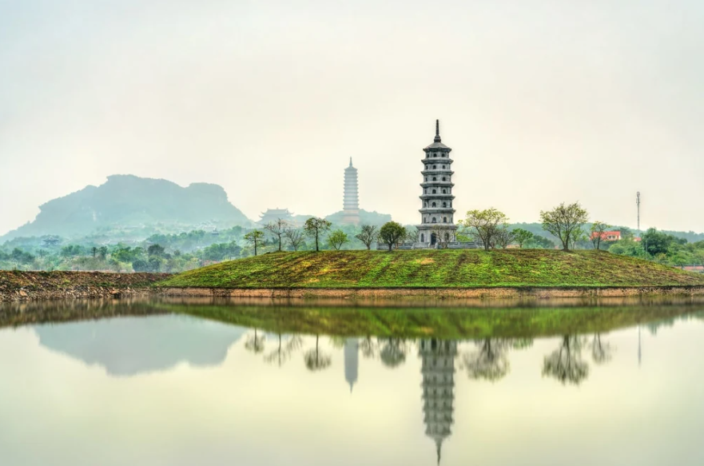
Không chỉ là một trong những quần thể chùa lớn nhất Việt Nam, chùa Bái Đính còn là nơi khiến bạn phải ngẩng đầu trầm trồ và cúi mình tĩnh lặng trong cùng một khoảnh khắc. Nằm trên sườn núi Đính, nơi đây gây ấn tượng với kiến trúc đồ sộ, hành lang La Hán dài bất tận, cùng tượng Phật bằng đồng cao đến choáng ngợp. Không gian thoáng đãng, thanh tịnh, ôm trọn bởi núi non và cây xanh, khiến mỗi bước chân lên chùa như được gột rửa mệt mỏi.
Vào mùa lễ hội, không khí nơi đây rộn ràng hơn nhưng vẫn giữ nguyên nét linh thiêng vốn có. Dù bạn đến để chiêm bái, ngắm cảnh hay đơn giản là tìm chút bình yên, chùa Bái Đính luôn có cách khiến người ta lặng lại một chút giữa hành trình vội vã.
14. Hang Múa Ở Ninh Bình - View Triệu Đô Từ Đỉnh Ngọa Long
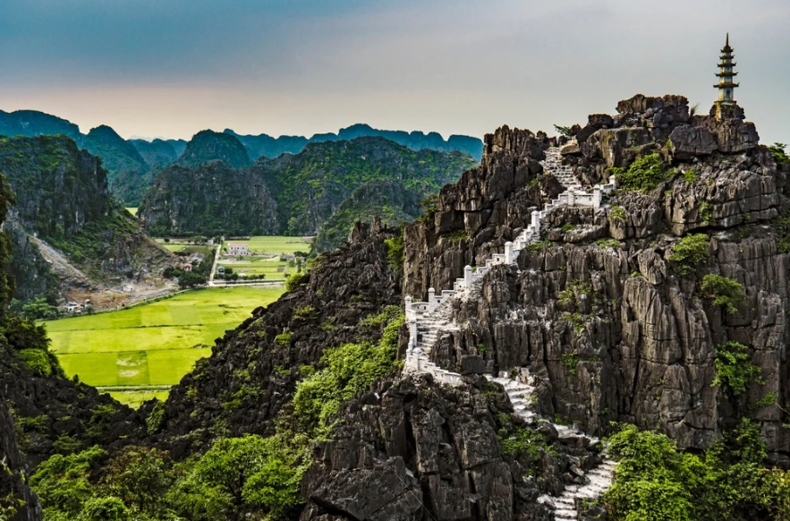
Hang Múa, với con đường lên đỉnh núi được ví như "Vạn Lý Trường Thành thu nhỏ", là điểm đến hấp dẫn tại Ninh Bình. Sau khi chinh phục gần 500 bậc thang đá, bạn sẽ được chiêm ngưỡng khung cảnh tuyệt đẹp của Tam Cốc, một trong những di sản thiên nhiên thế giới.
Không chỉ vậy, Hang Múa còn mang đậm dấu ấn lịch sử với truyền thuyết về vua Trần. Theo truyền thuyết, vua Trần Thái Tông thường lui tới đây nghe cung tần mỹ nữ múa hát khi về vùng Hoa Lư lập Am Thái Vi. Chính vì thế hang động này được đặt tên là Hang Múa.
15. Hang Sáng - Trải Nghiệm Khám Phá Không Thể Bỏ Qua Ở Ninh Bình
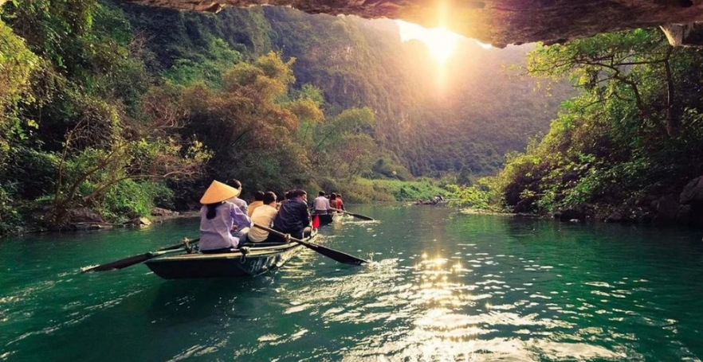
So với nhiều hang động nổi tiếng ở Ninh Bình, Hang Sáng mang đến một trải nghiệm rất khác biệt. Thay vì chỉ ngồi thuyền truyền thống, bạn có thể tự chèo kayak len lỏi qua hang, ngắm nhìn những khối thạch nhũ kỳ ảo từ nhiều góc độ độc đáo. Với địa hình còn giữ nguyên nét hoang sơ, nơi đây còn là “sân chơi” lý tưởng cho những ai mê mạo hiểm: từ leo núi, cắm trại đến khám phá rừng núi xung quanh. Nếu bạn muốn tìm một trải nghiệm mới lạ ngoài các tuyến du lịch phổ biến, Hang Sáng chính là lựa chọn đáng thử trong hành trình khám phá Ninh Bình.
16. Hang Tối - Hành Trình "Xuyên Không" Trong Lòng Đá Vôi
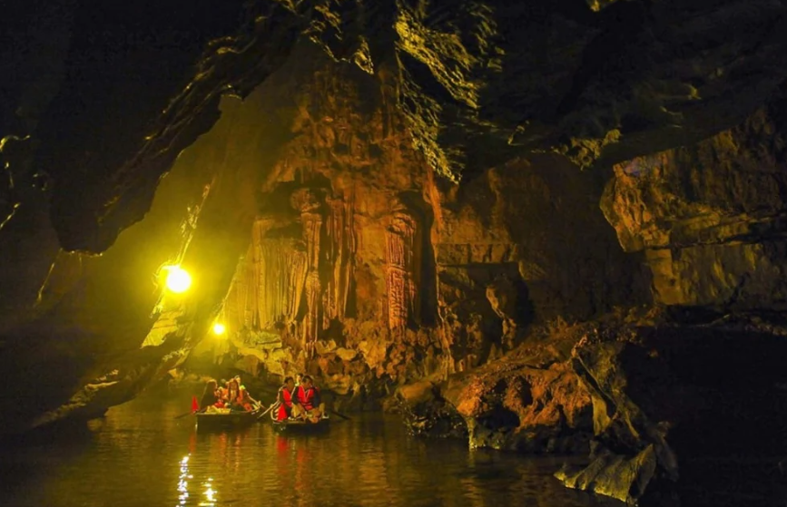
Hang Tối là một trong những hang động tự nhiên thuộc quần thể danh thắng Ninh Bình, sở hữu chiều dài khoảng 320m tính từ lối vào đến điểm cuối. Hang có hình vòm với trần khá thấp, tạo cảm giác vừa kỳ bí vừa gần gũi.
Bên trong, hệ thống đèn vàng được lắp đặt dọc lối đi giúp du khách dễ dàng quan sát các khối thạch nhũ với hình dạng độc đáo – kết quả của hàng nghìn năm nước nhỏ giọt và bào mòn. Không quá ồn ào hay đông đúc như các điểm nổi tiếng khác, Hang Tối là nơi lý tưởng nếu bạn muốn khám phá vẻ đẹp nguyên sơ và cấu trúc tự nhiên kỳ thú của lòng núi đá vôi Ninh Bình.
17. Hang Sính - Hang Si - Hang Ba Giọt, Ninh Bình
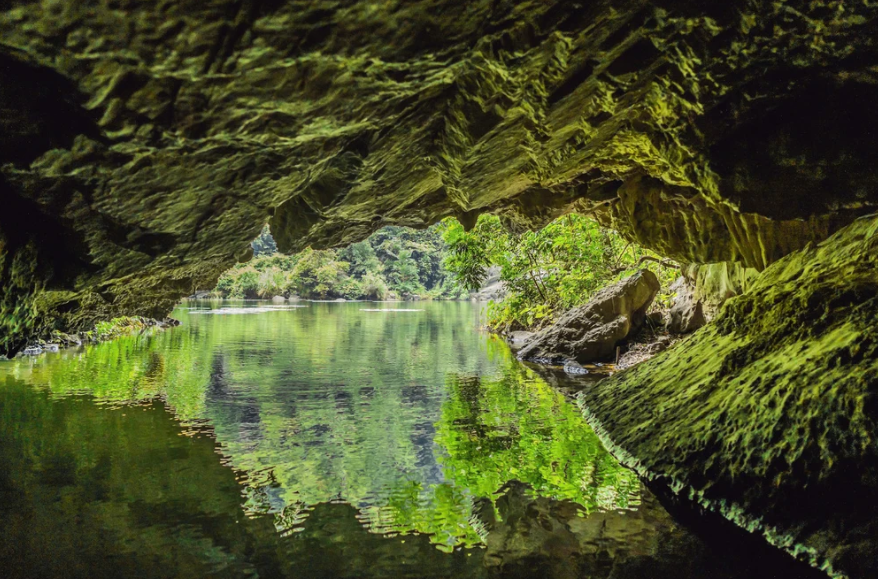
Hang Sính, Hang Si và Hang Ba Giọt là những hang động tự nhiên được hình thành qua hàng triệu năm phong hóa và bào mòn của nước. Cấu trúc độc đáo cùng hệ thống thạch nhũ đa dạng biến nơi đây thành một “bảo tàng địa chất sống” giữa lòng Ninh Bình, lưu giữ những dấu tích cổ xưa của Trái Đất. Trong đó, Hang Ba Giọt còn gắn liền với một truyền thuyết thú vị: ai đón được đúng ba giọt nước rơi từ nhũ đá sẽ gặp nhiều may mắn, tài lộc và viên mãn trong chuyện tình cảm.
18. Hang Nấu Rượu Ở Ninh Bình
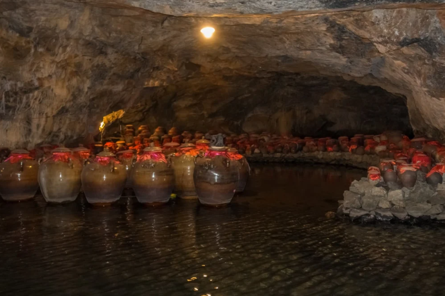
Hang Nấu Rượu, với chiều dài 250m và không gian rộng lớn, là một trong những hang động ấn tượng nhất ở Ninh Bình. Thuyền có thể dễ dàng di chuyển ngược chiều trong lòng hang, mang đến cho bạn trải nghiệm khám phá thú vị. Mạch nước ngầm sâu hơn 10m nối liền hang động với khu vực Cố đô Hoa Lư càng tăng thêm vẻ kỳ bí cho nơi này.
Tương truyền, người dân xưa đã từng sử dụng nguồn nước trong lành từ hang để nấu rượu tiến vua. Việc tìm thấy nhiều hiện vật gốm, hũ, vại và dụng cụ nấu rượu đã khẳng định điều này. Cái tên Hang Nấu Rượu cũng từ đó mà ra.
19. Núi Non Nước - Địa Điểm Du Lịch Ninh Bình Được Yêu Thích
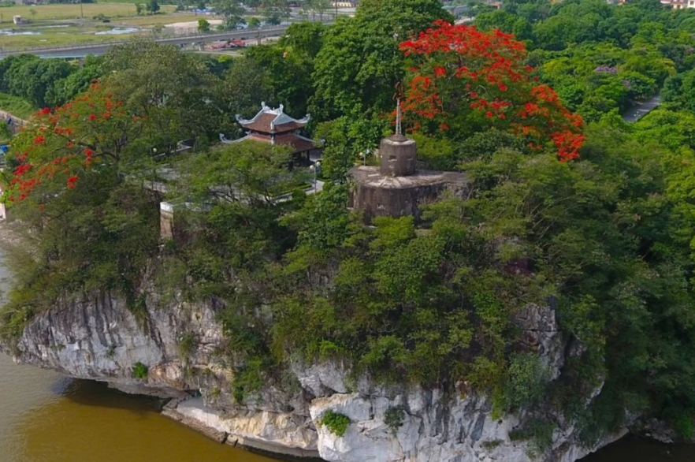
Núi Non Nước, còn có tên cổ là Dục Thúy Sơn, là một biểu tượng văn hóa lâu đời của Ninh Bình. Từng được mệnh danh là “núi thơ”, nơi đây không chỉ gắn liền với lịch sử mà còn in dấu trong thi ca qua nhiều thời kỳ. Trải qua bao biến động, ngọn núi vẫn sừng sững bên dòng sông Đáy, như một nhân chứng lặng lẽ của vùng đất cố đô. Từ đỉnh núi, phóng tầm mắt ra xa, bạn sẽ cảm nhận rõ nét vẻ đẹp giao hòa giữa thiên nhiên và chiều sâu lịch sử nơi đây.
20. Tuyệt Tình Cốc - Hồ Xanh Nổi Tiếng Ở Ninh Bình
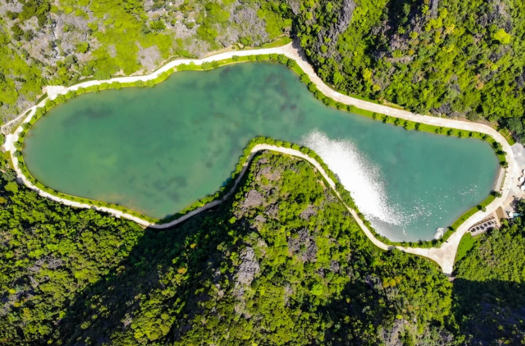
Nếu Ninh Bình là một cuốn phim cổ trang, thì Động Am Tiên, hay cái tên đầy mỹ miều "Tuyệt Tình Cốc" chính là phân đoạn trầm mặc và thi vị nhất. Nằm ẩn mình giữa những dãy núi đá vôi dựng đứng, nơi đây mở ra một thế giới hoàn toàn tách biệt với nhịp sống ồn ào ngoài kia.
Ít ai ngờ rằng, vẻ đẹp thanh bình của mặt hồ xanh màu ngọc bích hôm nay từng là "pháp trường" nghiêm cẩn dưới thời vua Đinh Tiên Hoàng. Chính lớp trầm tích lịch sử ấy, kết hợp với câu chuyện về những năm tháng tu hành cuối đời của Thái hậu Dương Vân Nga, đã bao phủ lên Tuyệt Tình Cốc một màu sắc huyền bí và đầy hoài niệm.
Đi dạo quanh bờ hồ, bạn sẽ bắt gặp những chiếc thuyền gỗ nhỏ neo đậu lặng lẽ trên mặt nước trong vắt đến mức nhìn thấu đáy. Đây không chỉ là "đạo cụ" hoàn hảo cho những bức ảnh check-in mang hơi hướng kiếm hiệp, mà còn là nơi để bạn dừng chân, hít hà không khí se lạnh của vùng núi và cảm nhận sự giao thoa kỳ diệu giữa thiên nhiên hoang sơ với dòng chảy lịch sử nghìn năm.
Tour gợi ý
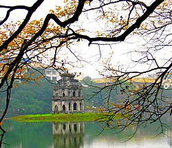
Tour Hà Nội và Làng Gốm Bát Tràng
Xác nhận tức thời
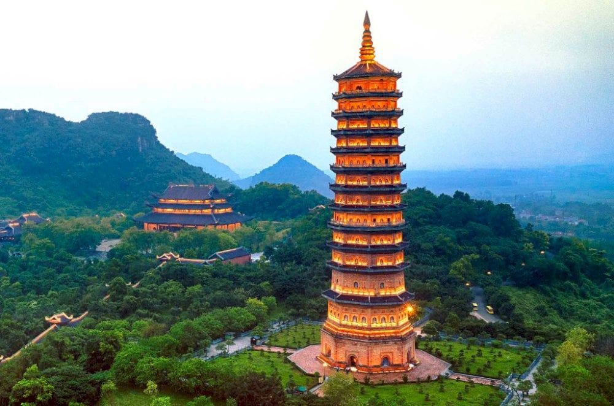
Tour Bái Đính - Tràng An - Hang Múa
Xác nhận tức thời
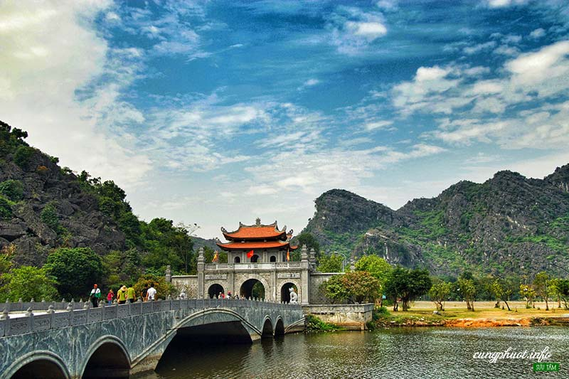
Tour trong ngày Hoa Lư-Tam Cốc-Tràng An và Hang Múa từ Hà Nội
Xác nhận tức thời
Tour ẩm thực và tham quan thành phố Hà Nội bằng xe máy
Xác nhận tức thời
Thuê xe đi Vườn quốc gia Cúc Phương từ Hà Nội
Xác nhận tức thời
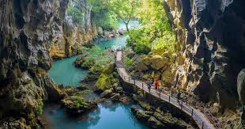
Tour Ngày Động Thiên Đường và Hang Tối
Xác nhận tức thời
Câu Hỏi Thường Gặp Về Các Địa Điểm Du Lịch Ninh Bình Cho Người Đi Lần Đầu
1. Đi Ninh Bình nên tham quan những địa điểm nào?
Những điểm nổi bật nhất ở Ninh Bình gồm Tràng An, Tam Cốc - Bích Động, Hang Múa, chùa Bái Đính, cố đô Hoa Lư và khu bảo tồn thiên nhiên Vân Long. Nếu có nhiều thời gian hơn, bạn có thể ghé thêm Thung Nham hoặc đầm Vân Long để ngắm chim và khám phá thiên nhiên.
2. Nên đi Tràng An hay Tam Cốc?
Tràng An nổi tiếng với hệ thống hang động xuyên núi và cảnh quan hoành tráng, thường được chọn nhiều hơn. Tam Cốc lại mang vẻ đẹp đồng quê yên bình, đặc biệt đẹp vào mùa lúa chín. Nếu có thời gian, bạn nên trải nghiệm cả hai vì mỗi nơi có một nét riêng.
3. Thời điểm nào đẹp nhất để du lịch Ninh Bình?
Khoảng tháng 5 - 6 là mùa lúa chín ở Tam Cốc, cảnh sắc vàng rực rất nổi tiếng. Ngoài ra mùa xuân (tháng 1 - 3 âm lịch) cũng là thời điểm đông du khách vì có nhiều lễ hội tại chùa Bái Đính.
5. Có cần đặt vé trước khi đi Tràng An không?
Thông thường bạn có thể mua vé trực tiếp tại bến thuyền Tràng An. Tuy nhiên vào mùa cao điểm, lễ Tết hoặc cuối tuần, nên đi sớm để tránh phải chờ lâu.
6. Hang Múa có khó leo không?
Hang Múa có khoảng 500 bậc đá. Việc leo lên đỉnh khá mất sức nhưng không quá khó nếu đi chậm. Từ trên đỉnh bạn sẽ thấy toàn cảnh Tam Cốc và sông Ngô Đồng rất đẹp.
7. Nên ở khu vực nào khi du lịch Ninh Bình?
Du khách thường chọn ở khu Tam Cốc hoặc Tràng An vì gần các điểm tham quan và có nhiều homestay giữa thiên nhiên. Nếu muốn thuận tiện ăn uống và di chuyển, bạn có thể ở trung tâm thành phố Ninh Bình.
8. Có thể tham quan Ninh Bình trong ngày từ Hà Nội không?
Hoàn toàn có thể. Ninh Bình cách Hà Nội khoảng 90 - 100km, di chuyển khoảng 2 giờ. Tuy nhiên nếu ở lại một đêm, bạn sẽ có nhiều thời gian trải nghiệm hơn và không bị vội.
9. Di chuyển giữa các điểm du lịch ở Ninh Bình bằng gì?
Thuận tiện nhất là thuê xe máy hoặc taxi. Các điểm tham quan khá gần nhau nên việc di chuyển trong ngày khá dễ dàng.
10. Ngoài cảnh đẹp thiên nhiên, Ninh Bình còn có gì đặc biệt?
Ninh Bình còn nổi tiếng với các món đặc sản như dê núi, cơm cháy, ốc núi và nhiều món ăn địa phương hấp dẫn. Đây cũng là vùng đất có nhiều di tích lịch sử gắn với cố đô Hoa Lư.
Chia sẻ ngay

Phù hợp với bạn
Những bộ phim Onepice hay nhất
Mua sắm ở Seoul?Đừng bỏ qua 18 địa điểm
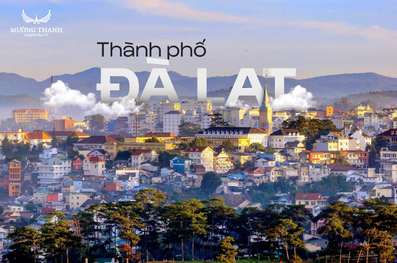
40 Địa điểm du lịch Đà Lạt
Những món ăn hấp dẫn
Tổng Quan
- 1. Cố Đô Hoa Lư
- 2. Đầm Vân Long
- 3. Hồ Đồng Chương
- 4. Nhà Thờ Đá Phát Diệm
- 5. Vườn Quốc Gia Cúc Phương
- 6. Đồi Dứa Tam Điệp, Ninh Bình
- 7. Thung Nắng - Danh Thắng Đẹp Như Tranh Thủy Mặc
- 8. Đền Thờ Vua Đinh Tiên Hoàng
- 9. Đền Thờ Vua Lê Ở Ninh Bình
- 10. Biển Kim Sơn - Cồn Nổi
- 11. Khu Thắng Cảnh Thung Nham
- 12. Danh Thắng Tam Cốc - Bích Động
- 13. Chùa Bái Đính - Quần Thể Tâm Linh Kỳ Vĩ Giữa Lòng Di Sản
- 14. Hang Múa Ở Ninh Bình - View Triệu Đô Từ Đỉnh Ngọa Long
- 15. Hang Sáng - Trải Nghiệm Khám Phá Không Thể Bỏ Qua Ở Ninh Bình
- 16. Hang Tối - Hành Trình "Xuyên Không" Trong Lòng Đá Vôi
- 17. Hang Sính - Hang Si - Hang Ba Giọt, Ninh Bình
- 18. Hang Nấu Rượu Ở Ninh Bình
- 19. Núi Non Nước - Địa Điểm Du Lịch Ninh Bình Được Yêu Thích
- 20. Tuyệt Tình Cốc - Hồ Xanh Nổi Tiếng Ở Ninh Bình
Được yêu thích ở Hà Nội